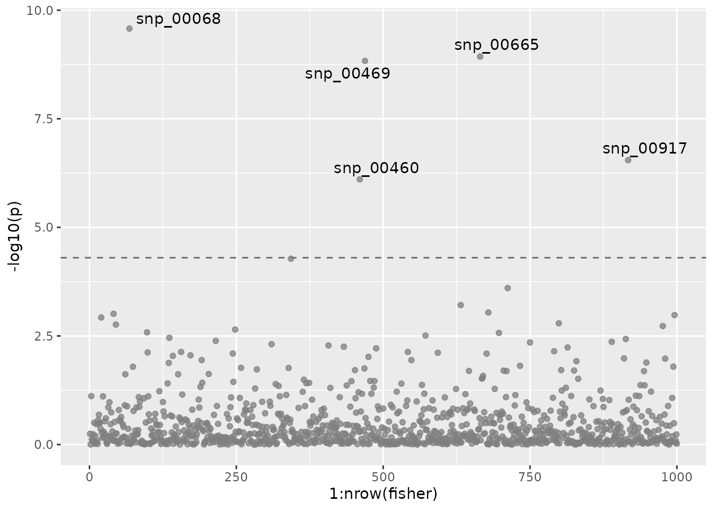

Illustrating mvMAPIT with Simulations
Julian Stamp
2022-11-01
Source:vignettes/mvMAPIT.Rmd
mvMAPIT.RmdNOTE: if you use mvMAPIT in published research, please cite:
- Crawford, L., Zeng, P., Mukherjee, S., & Zhou, X. (2017). Detecting epistasis with the marginal epistasis test in genetic mapping studies of quantitative traits. PLoS genetics, 13(7), e1006869.
- Stamp, J., DenAdel, A., Weinreich, D. & Crawford, L. (2022). Multivariate MAPIT.
- Stamp J, Crawford L (2022). mvMAPIT: Multivariate Genome Wide Marginal Epistasis Test. https://github.com/lcrawlab/mvMAPIT, https://lcrawlab.github.io/mvMAPIT/
Getting Started
Load necessary libraries. For the sake of getting started, mvMAPIT comes with a small set of simulated data. This data contains random genotype-like data and two simulated quantitative traits with epistatic interactions. To make use of this data, call the genotype data as simulated_data$genotype, and the simulated trait data as simulated_data$trait. The vignette traces the simulation and the possible analysis of this data.
library(mvMAPIT)
library(dplyr)
library(ggplot2)
library(ggrepel)
library(tidyr)
library(kableExtra)NOTE: This code assumes that the basic C++ functions are set up on the computer in use. The
Rcpppackages rely on C++ libraries, e.g.openblas,lapack,flibs. Mac users please refer to the homebrew applications and install thegcccommands listed in theREADMEfile.
Simulating Data
Data are simulated sample genotypes with \(p\) single nucleotide polymorphisms (SNPs) and \(n\) samples togeter with some quantitative traits.
Simulate Genotypes
Create a matrix that contains underdetermined genotype data of random minor allele counts encoded as 0, 1, and 2. We control the minor allele frequency maf to be greater than 0.05.
set.seed(1234)
n_samples <- 2938
n_snp <- 5747
maf <- 0.05 + 0.45 * runif(n_snp)
random_minor_allele_counts <- (runif(n_samples * n_snp) < maf) + (runif(n_samples * n_snp) < maf)
genotype_data <- matrix(random_minor_allele_counts,
nrow = n_samples,
ncol = n_snp,
byrow = TRUE,
)
sample_names <- seq_len(n_samples) %>% sprintf(fmt = "id%04d")
snp_names <- seq_len(n_snp) %>% sprintf(fmt = "snp%04d")
colnames(genotype_data) <- snp_names
rownames(genotype_data) <- sample_namesThe entries in the genotype matrix are:
- \(0\) if the genotype is homozygous in the reference allele,
- \(1\) if both, the reference allele and the alternative allele are present,
- \(2\) if the genotype is homozygous in the alternative allele.
An example genotype matrix could look like this:
| Sample | SNP 1 | SNP 2 | … | SNP p |
|---|---|---|---|---|
| 1 | 0 | 1 | … | 2 |
| 2 | 1 | 0 | … | 0 |
| … | … | … | … | 1 |
| n | 2 | 2 | … | 1 |
Simulate Traits
The simulated traits will be based on the genotype data simulated in the previous step. The causal SNPs as well as their effect sizes will be drawn at random. For simulating traits, we need to control the following simulation parameters.
Simulation Parameters:
-
n: number of samples -
p: number of SNPs or variants -
d: number of traits -
PVE: phenotypic variance explained/broad-sense heritability (\(H^2\)) -
rho: portion of \(H^2\) that is contributed by the marginal (additive) effects - Number of SNPs that are causing variation in the trait:
-
n_causal: total number of SNPs with any effects on traits. -
n_trait_specific: number of epistatic SNPs that affect a single trait. -
n_pleiotropic: number of epistatic SNPs that affect all traits. -
group_ratio_pleiotropic: ratio by which to split the epistatic SNPs into groups, e.g. 1:1, 1:3.
-
-
epistatic_correlation: correlation between the epistatic effects.
seed <- 67132
d <- 2
PVE <- 0.6
rho <- 0.2
n_causal <- 1000
n_trait_specific <- 0
n_pleiotropic <- 10
group_ratio_pleiotropic <- 1
epistatic_correlation <- 0.9
maf <- 0.05
simulated_data <- simulate_traits(
genotype_data,
n_causal = n_causal,
n_trait_specific = n_trait_specific,
n_pleiotropic = n_pleiotropic,
d = d,
H2 = PVE,
rho = rho,
epistatic_correlation = epistatic_correlation,
group_ratio_pleiotropic = group_ratio_pleiotropic,
maf_threshold = maf,
seed = seed
)We randomly choose causal variants that are split into three groups:
- set of additive SNPs without interactions,
- group 1 of interaction SNPs, and
- group 2 of interaction SNPs.
In the simulations carried out in this study, SNPs interact between sets. SNPs in the first group interact with SNPs in the second group, but do not interact with variants in their own group, and vice versa. One may view the SNPs in the first set as the “hubs” in an interaction map. We are reminded that interaction (epistatic) effects are different from additive effects. The following image illustrates the simulation of interactions.

Trait simulations. From all SNPs, a random subset of causal SNPs is sampled and assigned to one of three groups. SNPs in one of the two epistatic groups interact with all SNPs in the other epistatic group to simulate pairwise interactions.
NOTE: All causal SNPs in both the second and third groups have additive effects and are involved in pairwise interactions, while causal SNPs in the first set only have additive effects.
For more details look at the end of this vignette.
Running mvMAPIT
NOTE: mvMAPIT takes the X matrix as \(p \times n\); not as \(n \times p\).
The R routine mvmapit can be run in multiple modes. By default it runs in a hybrid mode, performing tests both wtih a normal Z-test as well as the Davies method. The resulting p-values can be combined using functions provided by mvMAPIT, e.g. fishers_combined(), that work on the pvalues tibble that mvmapit returns.
mvmapit_hybrid <- mvmapit(
t(data$genotype),
t(data$trait),
test = "hybrid"
)
fisher <- fishers_combined(mvmapit_hybrid$pvalues)To visualize the genome wide p-values, we use a Manhattan plot.
manhplot <- ggplot(fisher, aes(x = 1:nrow(fisher), y = -log10(p))) +
geom_hline(yintercept = -log10(thresh), color = "grey40", linetype = "dashed") +
geom_point(alpha = 0.75, color = "grey50") +
geom_text_repel(aes(label=ifelse(p < thresh, as.character(id), '')))
plot(manhplot)
To control the type I error despite multiple testing, we recomment the conservative Bonferroni correction. The significant SNPs returned by the mvMAPIT analysis are shown in the output below.
thresh <- 0.05 / nrow(fisher)
significant_snps <- fisher %>%
filter(p < thresh) # Call only marginally significant SNPs
truth <- simulated_data$epistatic$name %>%
unique()
significant_snps %>%
mutate_if(is.numeric, ~(as.character(signif(., 3)))) %>%
mutate(true_pos = id %in% truth) %>%
kable(., linesep = "") %>%
kable_material(c("striped"))| id | trait | p | true_pos |
|---|---|---|---|
| snp_00576 | fisher | 3.25e-06 | FALSE |
| snp_00762 | fisher | 3.81e-09 | TRUE |
| snp_00901 | fisher | 5.99e-06 | FALSE |
| snp_00917 | fisher | 2.16e-07 | TRUE |
| snp_01092 | fisher | 7.54e-07 | TRUE |
| snp_02219 | fisher | 4.07e-21 | TRUE |
| snp_02262 | fisher | 2.41e-06 | FALSE |
| snp_02280 | fisher | 2.5e-13 | TRUE |
| snp_02476 | fisher | 2.05e-31 | TRUE |
| snp_03737 | fisher | 6.96e-07 | TRUE |
| snp_05699 | fisher | 1.82e-06 | FALSE |
To compare this list to the full list of causal epistatic SNPs of the simulations, refer to the following list.
print(truth)
# [1] "snp_00762" "snp_00917" "snp_01092" "snp_02167" "snp_02219" "snp_02280"
# [7] "snp_02476" "snp_03737" "snp_04312" "snp_04565"Running an Informed Exhaustive Search
Now we may take only the significant SNPs according to their marginal epistatic effects and run a simple exhaustive search between them. The significant SNPs are significant after combining the results from the multivariate analysis using Fisher’s method and adjusting the significnat threshold via Bonferroni correction.
The search itself is a simple regression on the interaction terms between all significant interactions.
# exhaustive search for p-values
pairs <- NULL
if (nrow(significant_snps) > 1) {
pairnames <- comboGeneral(significant_snps$id, 2)
# Generate unique pairs of SNP names;
# for length(names) = n, the result is a (n * (n-1)) x 2 matrix with one row corresponding to a pair
for (k in seq_len(nrow(pairnames))) {
fit <- lm(y ~ X[, pairnames[k, 1]]:X[, pairnames[k, 2]])
p_value1 <- coefficients(summary(fit))[[1]][2, 4]
p_value2 <- coefficients(summary(fit))[[2]][2, 4]
tib <- tibble::tibble(
x = p_value1,
y = p_value2,
u = pairnames[k, 1],
v = pairnames[k, 2]
)
pairs <- bind_rows(pairs, tib)
}
}
colnames(pairs) <- c(colnames(y), "var1", "var2")Visualize Exhaustive Search Results
We plot the \(-\mathrm{log}_{10}(p)\) of the p-values for the regression coefficients as tile plot to highlight the identified interaction structure.
plotable <- pairs %>%
pivot_longer(
cols = starts_with("p_"),
names_to = "trait",
names_prefix = "trait ",
values_to = "p",
values_drop_na = TRUE
) %>%
mutate(pplot = case_when(
p < 0.05 ~ p,
TRUE ~ 1))
tiles <- ggplot(data = plotable, aes(x=var1, y=var2, fill=-log10(pplot)))+
geom_tile() +
facet_wrap(~trait) +
theme(axis.text.x = element_text(angle = 90, vjust = 0.5, hjust=1)) +
scale_fill_viridis_c()
plot(tiles)Compare this to the true interaction structure.
true_interactions <- simulated_data$interactions %>%
mutate(var1 = sprintf(group1, fmt = "snp_%05d")) %>%
mutate(var2 = sprintf(group2, fmt = "snp_%05d"))
true_tiles <- ggplot(data = true_interactions, aes(x=var1, y=var2, fill=effect_size))+
geom_tile() +
facet_wrap(~trait) +
theme(axis.text.x = element_text(angle = 90, vjust = 0.5, hjust=1)) +
scale_fill_gradient2(low = "blue", high = "red", mid = "white")
plot(true_tiles)Appendix: Details on Simulating Pairwise Epistasis
The general simulation scheme for interactions follows the methods outlined in Crawford et al. (2017). For the data representing the null hypothesis of no epistasis present, 1000 SNPs without rare variants are sampled from the genotype data. The effect sizes of the causal SNPs then are sampled independently from a multivariate normal distribution according to equation .
\[\begin{equation}\label{eq:null_simulations_beta} \mathbf{b}_i \sim \mathcal{N}_{d}\left(0, \mathbf{U}\right) \end{equation}\]
As parameter of the simulations, \(\mathbf{U}\) describes the covariance between the additive effects of the causal SNPs on the \(d\) different traits. The effects of all other SNPs are set to zero.
In order to simulate pleiotropy, the number of desired pleiotropic SNPs is sampled from the set of causal SNPs. These SNPs are then included in simulating interactions for every trait. Additionally, trait specific SNPs are sampled independently for each trait from the causal SNPs without the pleiotropic SNPs.
The interactions are modeled by selecting the number of desired SNPs that have non-zero pairwise interaction effects. These SNPs then are split into two groups. Each SNP from one group is simulated to interact with each SNP of the other group but not with any SNP within the same group that it was assigned to. This results in \(n_1 \cdot n_2\) epistatic interactions, with \(n_i\) the number of SNPs in group i. For all these interactions, random effects are sampled from the multivariate normal distribution given in .
\[\begin{equation}\label{eq:simulations_alpha} \mathbf{a}_i \sim \mathcal{N}_{d}\left(0, \mathbf{V}\right) \end{equation}\]
Analogously, \(\mathbf{V}\) is the covariance between the pariwise epistatic effects of the causal SNPs on the \(d\) different traits. The portion of the variance \(\mathbf{E}\) that is not due to heritable effects is simulated as multivariate normal with no correlation. The effects of the SNPs and interactions are collected in matrices \(\mathbf{A}\) and \(\mathbf{B}\). The matrices \(\mathbf{X}\) and \(\mathbf{W}\) contain the genotype data of the causal SNPs and interactions. With these effects, the phenotypes then are simulated according to equation .
\[\begin{equation}\label{eq:simulation_mapit} \mathbf{Y} = \mathbf{X}\mathbf{B} + \mathbf{W}\mathbf{A} + \mathbf{E} \end{equation}\]
For each trait independently, the variance components are scaled such that the variance can be partitioned according to equation .
\[\begin{align}\label{eq:simulation_var_comp} \mathbf{Y} &= \mathbf{Y}_{X} + \mathbf{Y}_{W} + \mathbf{E} \\ \mathrm{var}(\mathbf{Y}) &= \mathrm{var}(\mathbf{Y}_{X}) + \mathrm{var}(\mathbf{Y}_{W}) + \mathrm{var}(\mathbf{E}) \\ &= \rho \cdot H^2 + (1 - \rho) \cdot H^2 + (1 - H^2) \\ &= 1 \end{align}\]